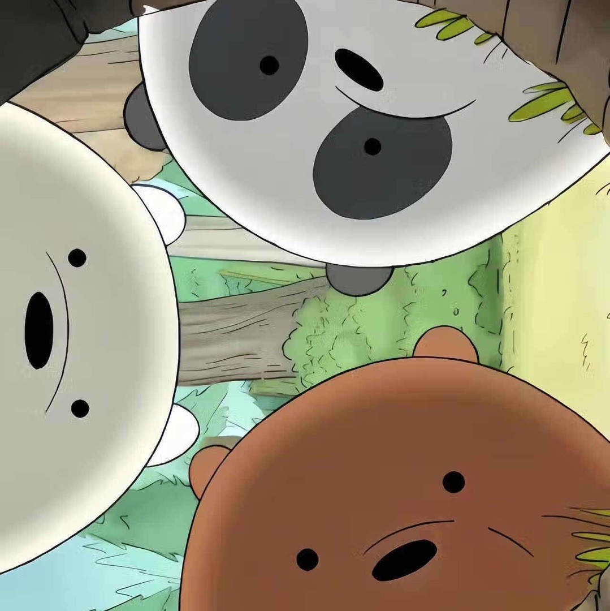
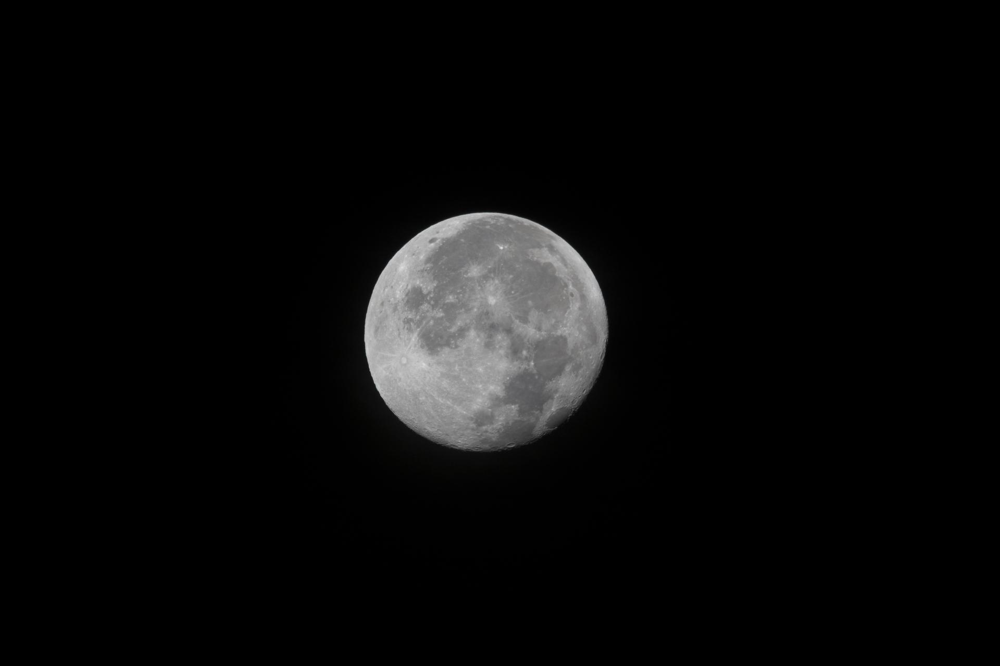
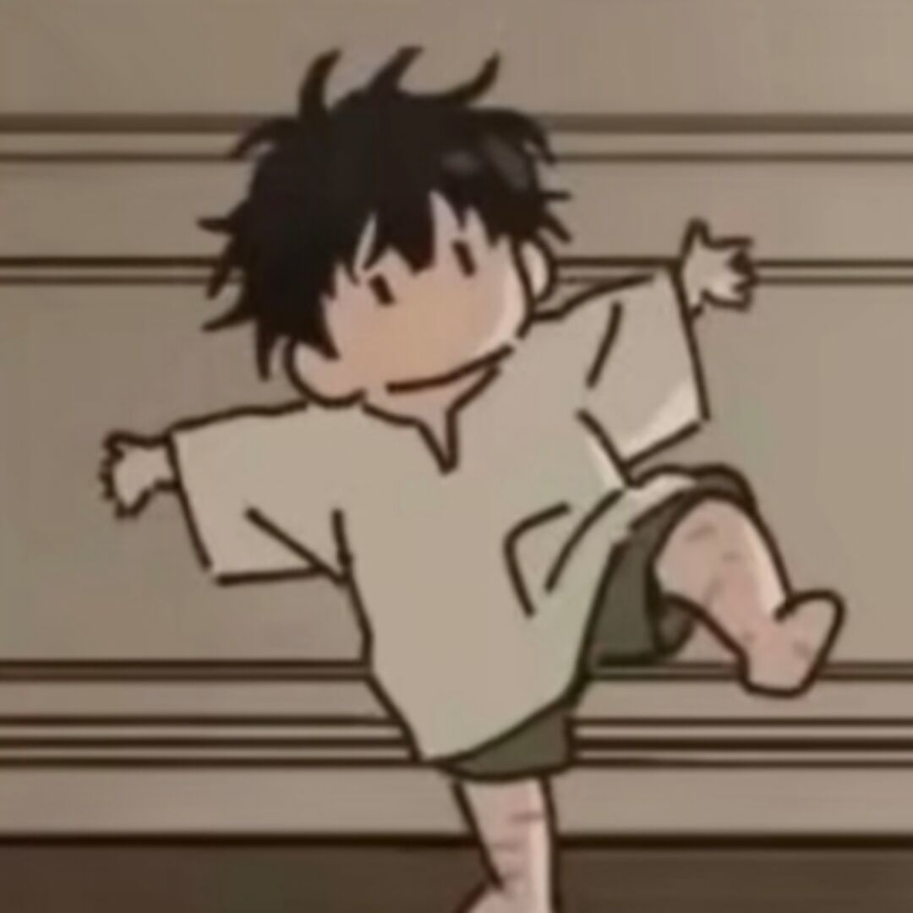
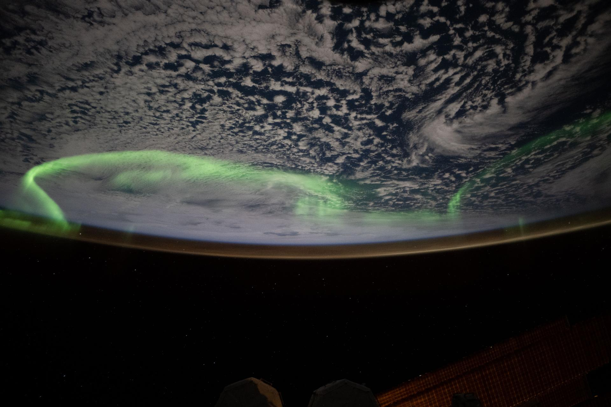
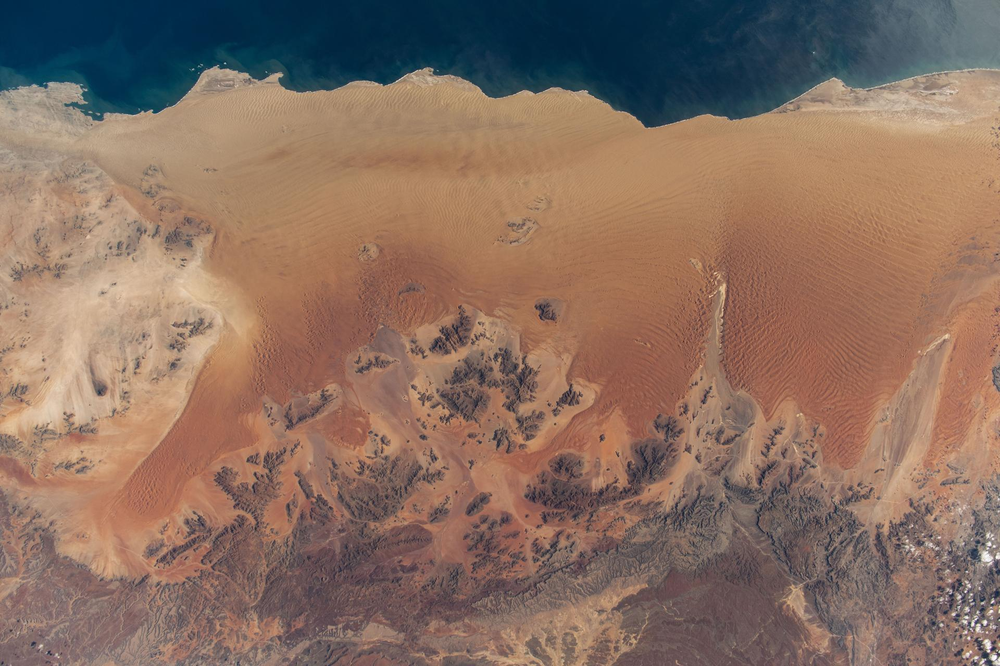
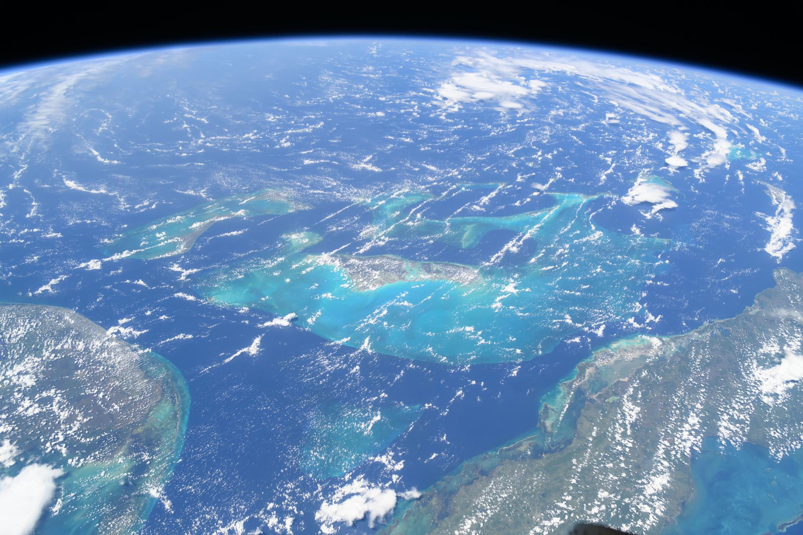
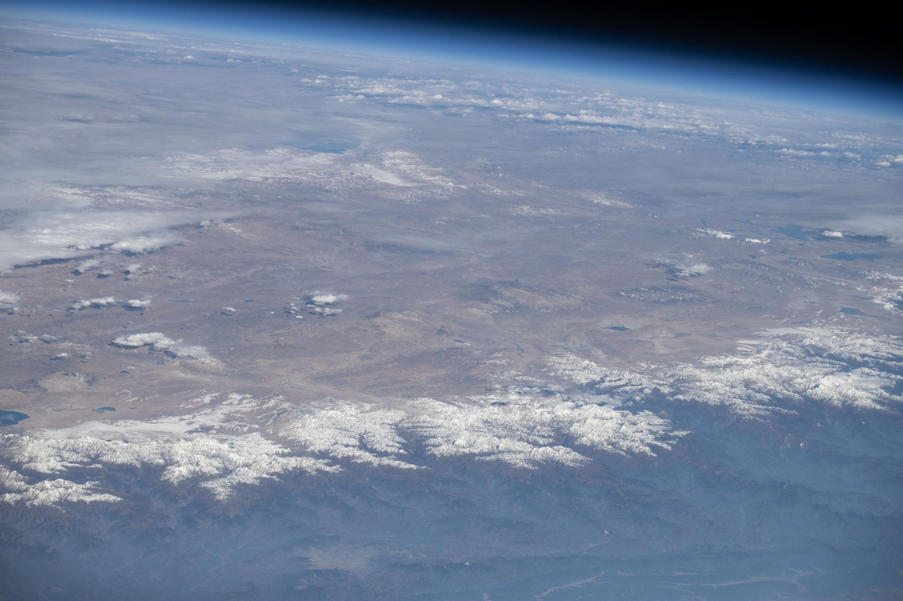
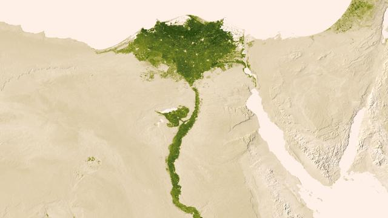

我的世界
从方块开始。他喜欢挖，喜欢把东西摆整齐，喜欢在自己造的房子里待着不说话。凌晨三点的矿洞，他一个人能挖很久。


温柔，内敛，偶尔天然呆。一个玩我的世界、闲来无事打打洲的 INFP，饭替他做了这一页。
小鱼，中文名就这两个字，没有别的。
他是我认识的人里最不吵的一个。说话声音不大，回复慢，句子短，但从来不敷衍。
INFP，巨蟹座，七月八日生。这三个标签叠在一起，差不多就是他：把情绪收在里面，把好意放在外面。
有点天然呆。你跟他讲一件事，他会认真听完，然后问一个让你愣住的问题。不是笨，是他真的在按自己的节奏想。
大部分时间待在家里。这页是我替他做的，他不一定会来看。

我是饭。
跟小鱼认识有些年头了。最开始只是一起开黑，后来变成有事没事聊两句，再后来就成了那种：不用天天说话，但知道人在的关系。
他不太会主动。你想起来找他的时候，他永远在；你忙起来忘了他，他也不生气。这种人很少。
这页是我写的，字是我打的，版是我排的。他大概会觉得有点夸张，然后回一句「哦，谢谢」。
如果你也认识他，就当这是一份补充说明。如果你不认识，那你现在认识了一个还不错的人。
饭
替他写这页的人
滚轮就是播放键。往下滚，四张图走完二十四秒；往上滚，它倒着放。




南天极光 · 印度洋上空 · NASA
从方块开始。他喜欢挖，喜欢把东西摆整齐，喜欢在自己造的房子里待着不说话。凌晨三点的矿洞，他一个人能挖很久。
闲来无事打打洲。枪法一般，但很稳，属于那种不声不响把活干完的队友。你回头的时候，该清的都清了。
